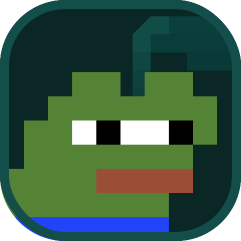
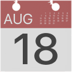
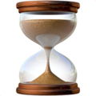
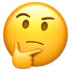

Межсезонье
6 сезон сервера закончился. Сейчас идёт межсезонье и работают экспериментальные серверы, запущенные перед стартом нового сезона PepeLand
Активный эксперимент

Эксперимент 60
Выживание на летающих островах

Огромные проекты
Благодаря слаженному сообществу, мы смогли уничтожить морской монумент менее чем за 15 минут, раскопать 200 тысяч блоков песка за 5 часов, а также построить спавн за 4 дня. И всё это в первый месяц сезона.
Плейлист с видео о сервере на YouTube
Разнообразные ивенты
Администрация и игроки сервера часто проводят интересные ивенты, например: Шалкер-битва, Что? Где? Когда?, Ралли. Также присутствуют и ивентовые дни — дни, когда весь день проходят ивенты на самом сервере, или на отдельном сервере.
Видео о Шалкер-битве
5 миров, 1 сервер
На нашем сервере построена система из пяти миров-серверов — мир построек, второй мир построек, мир ферм, мир ресурсов, энд-мир. Каждый мир является сервером, работающем в отдельном потоке. Так как они в отдельных потоках, лаги одного мира не отражаются на другом мире.
Подробнее в вики
Сплочённое сообщество
Игроки сервера помогают друг другу, объединяются в команды, строят совместно постройки и фермы, общаются каждый день в нашем Discord сервере и получают невероятный опыт и удовольствие от игры на сервере.
Discord серверЧасто задаваемые вопросы

Сколько длится сезон?
Шестой сезон начался 18 августа 2021 года. Он длился 220 дней.

Могу ли я играть с телефона?
Нет, сервер доступен только на Java Edition.

Какая валюта на сервере?
Мы используем алмазы.

На какое время приобретается доступ?
Доступ на сервер выдается только на 1 сезон, в следующий раз его придётся приобретать ещё раз.

Лицензия нужна?
Да, приобрести вы её можете здесь.

Где можно прочитать правила сервера?
Правила находятся на данной странице.

Какой IP и версия эксперимента?
IP:
Версия: Java Edition 1.18.2
Сколько будет идти сезон?
6 сезон уже закончился, ждем вас на новом сезоне!

Есть ещё вопросы?
Заходите в вики сервера, там много полезного!